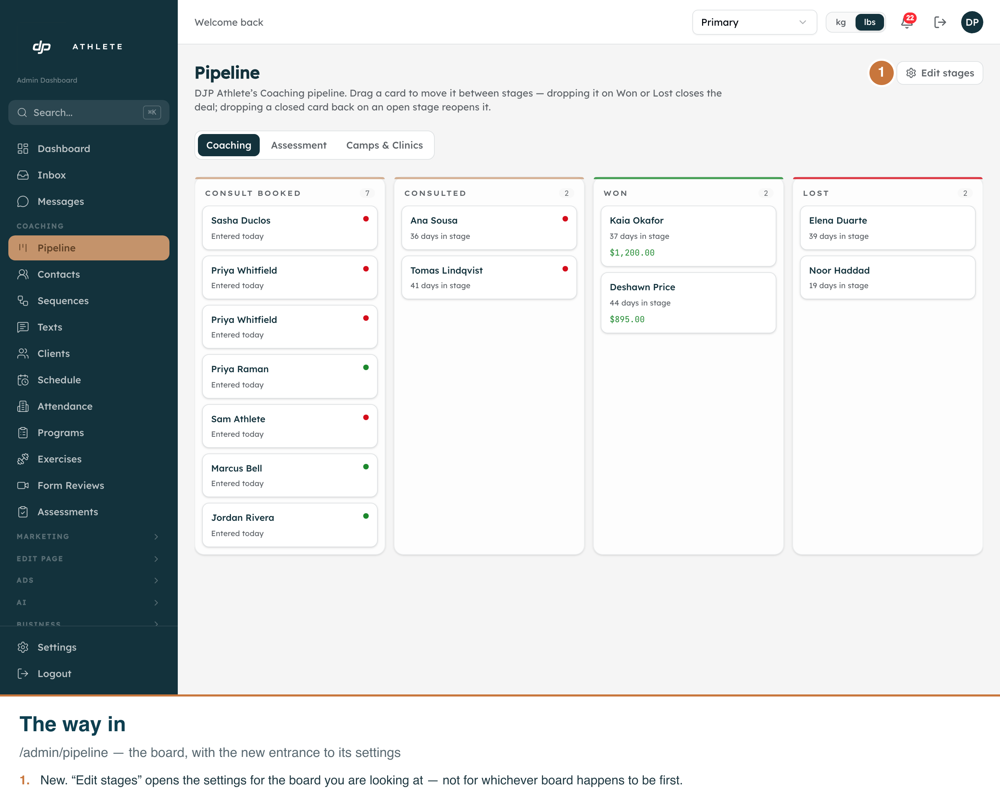
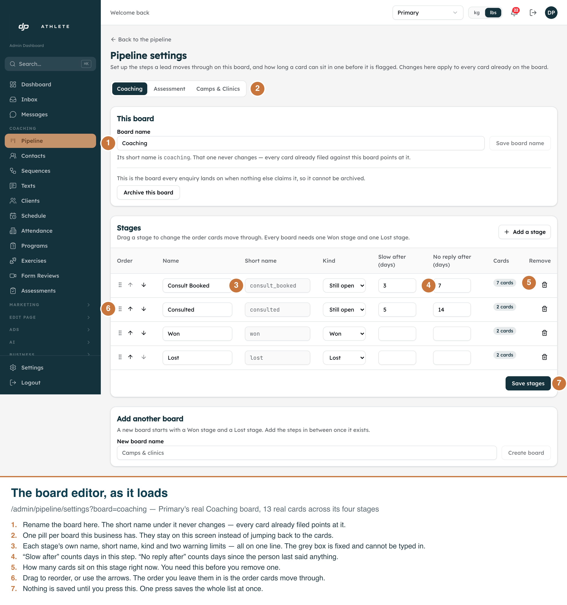
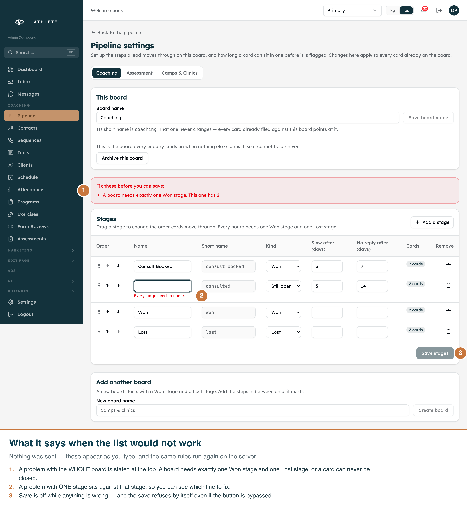
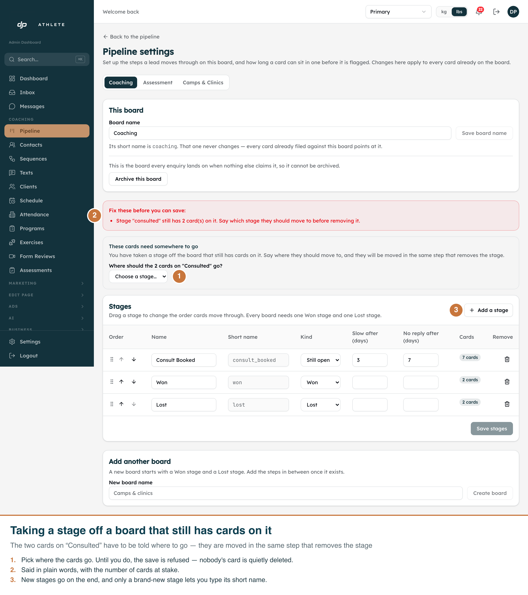

G29 Task 7 · /admin/pipeline/settings · captured 2026-09-22 from the real app on the dev clone,
tenant Primary, board Coaching (13 real cards across four stages).
Callouts are burned into each PNG — open any file on its own and it explains itself.
npx next dev --port 3071 then
node scripts/capture-pipeline-settings-screenshots.mjs.

/admin/pipeline. The new Edit stages link carries ?board=, so the
editor opens on the board being looked at rather than on whichever one the fallback picks.

components/ui/data-table.tsx): name, short name (fixed
once it exists, so it is rendered read-only), kind, the two day limits, and how many cards sit on it right
now. Board pills stay on this screen instead of jumping back to the cards.

validateStageList — the same pure
function the route runs again on the server. Save is greyed out, and the save handler refuses by itself
even if the button is bypassed.

| State | Why not |
|---|---|
| The default board's archive refusal | Reaching it means actually sending the PATCH, and the dev clone is shared with peer sessions. Covered by a component test that asserts the route's sentence is displayed verbatim, never swallowed. |
| A successful save | Same reason — it would rewrite Primary's Coaching board for everybody using this clone. |
| Dark mode | The admin UI is light-only; .dark is a class variant the admin never sets. |